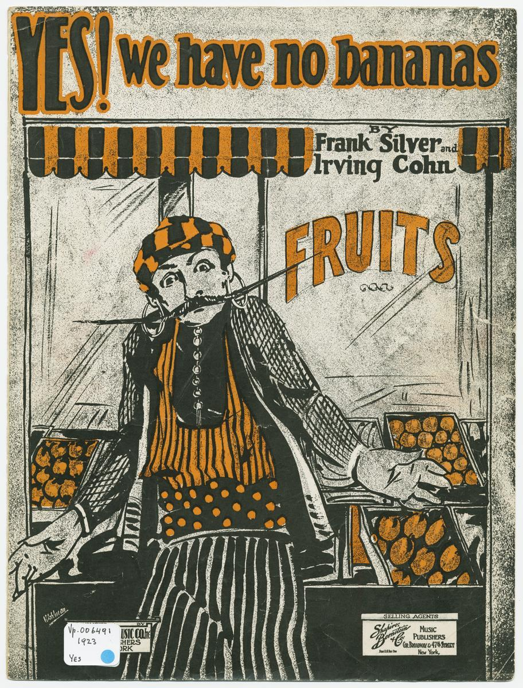
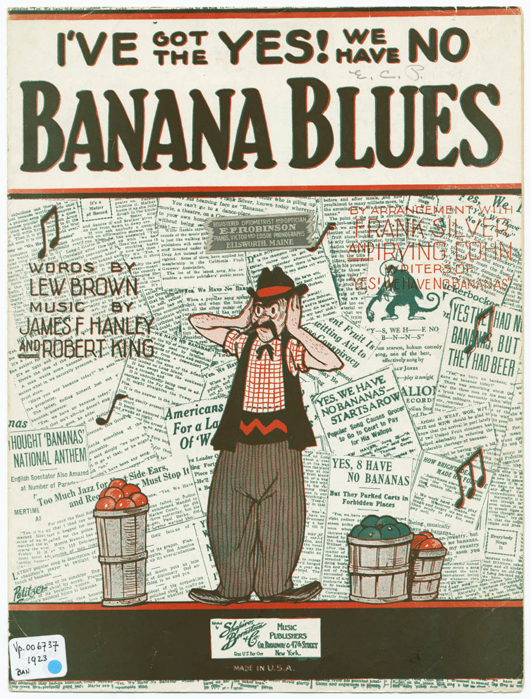

|  |  |
|---|
The Tin Pan Alley period of American sheet music saw the publication of several songs on the topic of bananas. Among these are such gems as “Banana Oil,” “I’ve Never Seen a Straight Banana,”Yes! We Have No Bananas," and “I’ve Got the ‘Yes! We Have No Bananas’ Blues.” There may be numerous explanations for the proliferation of banana-themed music in American history. In this short paper, I will look at the interplay between the last two of the songs listed above: “Yes! We Have No Bananas” by Irving Cohn and Frank Siver; and James F. Hanley, Robert King, and Lew Brown’s curmudgeonly response: “I’ve Got the ‘Yes! We Have No Bananas’ Blues.” This analysis will track the way that the reply borrows, parodies, and alters material from the original. I argue that the reply mocks the original though the use of quotation and alteration.
“I’ve Got the Yes! We Have No Bananas Blues” expresses a sentiment with which I think we can all sympathize: the annoyance of the latest popular song playing everywhere you go in catchy, inescapable, torment. The singer is tired of hearing “Yes! We Have No Bananas”—such a hit that it is impossible to go anywhere without hearing it played or performed. It is quoted in a number of ways.
The first instance of quotation appears in measures 11 though 13. The song is referenced by title as the performer sings “Lately I’ve been off my nut, I keep hearing nothing but”Yes! We have no bananas." And when the song is named, the melody of the titular chorus of the original is quoted literally in order to mock it.
In the next eight-bar phrase we see the same style of quotation, the song is referenced by title again. This time, however, the melody begins a step higher and over the dominant harmony. The pitches are altered a small amount to fit the new accompaniment, but the joke is clear and the start at a higher pitch expresses the singer’s growing exasperation.
Upon entering the chorus we see the melody quoted again, but more significantly altered than the previous two instances. The chorus opens with its titular line “I’ve Got the Yes! We Have No Bananas Blues.” This time the quoted melody is made “bluesy” in a couple of ways. First, there is an introduction of chromatic anacrusi on altered scale degrees b7 and #2 over tonic harmony. It is clear that this is intended to mimic the chromatic deviations from the major scale commonly made use of in the blues.
In this section we also see an introduction of swung eights. Whereas in a jazz or blues lead sheet these would commonly be noted as normal eighth notes and the performer would know, based on editorial markings or experience, how to appropriately alter the eighths. Here, however, the swing is literally noted as dotted eighths alternating with sixteenths. This might allow for players who are unfamiliar with swung eighths to better mimic them.
A structural element of note in this piece is that the quoted chorus is used as thematic material in both the chorus and the verse. This highlights the catchy titular melody of the original and takes part in its intolerable, ubiquitous, repetition.